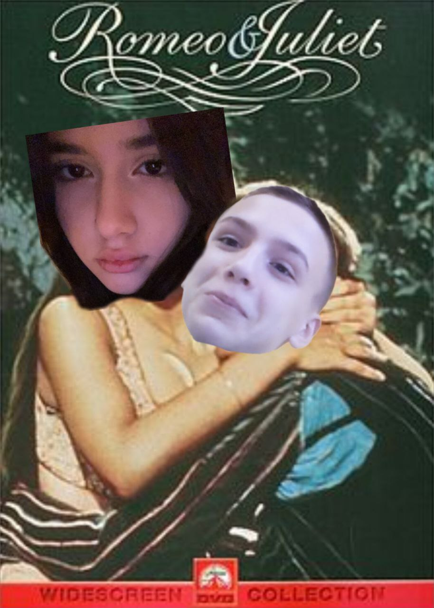

У маленькому українському містечку, де всі один одного знають, жила Христина – чотирнадцятирічна дівчина з багатої родини. Її батько був впливовим бізнесменом, а мати – шанованою вчителькою. Навпроти їхнього будинку жила родина Владислава. Його батьки були простими людьми, що тримали невеличку пекарню, а сам Влад захоплювався музикою і мріяв стати композитором. Одного вечора Христина прийшла на святкування дня народження своєї подруги. Влад теж був серед гостей. Їхні погляди зустрілися, і в ту мить світ для них змінився. Вони говорили про музику, про книги, про мрії. Кожна хвилина здавалася їм вічністю. Але щойно дізналися, що їхні родини ворогують через старі непорозуміння, їх охопив страх.
Незважаючи на ворожнечу між родинами, Влад і Христина продовжували зустрічатися потайки. Вони писали одне одному листи, які передавали через молодшого брата Владислава. Христина потай виходила з дому пізно ввечері, щоб зустрітися з Владом у старому парку біля річки. Вони мріяли про майбутнє, де їх ніхто не зможе розлучити. Але одного разу їх викрив старший брат Христини, Максим. Він доніс про це батькові, і той заборонив дочці навіть згадувати ім’я Влада. Христині заборонили виходити з дому, а Владові погрожували вигнати його родину з міста, якщо він ще раз наблизиться до дівчини.
Розуміючи, що їхнім почуттям загрожує небезпека, Влад і Христина вирішили втекти разом. Вночі вони домовилися зустрітися біля старої залізничної станції і поїхати в інше місто. Але коли Христина пробиралася через сад, її помітив батько. Він замкнув її в кімнаті. Тим часом Влад чекав її на станції. Він не знав, що Христина не зможе прийти. У відчаї він написав їй листа і залишив на лавці, сподіваючись, що вона знайде його. Але лист потрапив у руки її брата. Максим, не вагаючись, розповів батькові, і той вирішив назавжди розлучити їх.
Наступного дня Христину оголосили зарученою з сином батькового друга. Вона не хотіла цього шлюбу і впала у відчай. Тим часом Влад, дізнавшись про це, вирішив піти до неї додому і благаючи про зустріч. Але охоронці не пустили його. Коли Христина дізналася, що Влад приходив, але його прогнали, її серце розбилося. Вона втекла з дому і кинулася до річки, сподіваючись знайти його там. Влад, який теж шукав її, знайшов дівчину, коли вона стояла на мосту, не знаючи, що робити. Вони обнялися і вирішили, що не дозволять нікому зруйнувати їхню любов. Зранку батьки знайшли їх разом у парку, міцно обійнявшись. Вони зрозуміли, що сила їхніх почуттів більша за ворожнечу, і, нарешті, дозволили їм бути разом. Влад і Христина не втекли, але вони змінили світ довкола себе. Їхня історія стала легендою міста – історією про любов, що перемогла ненависть.
